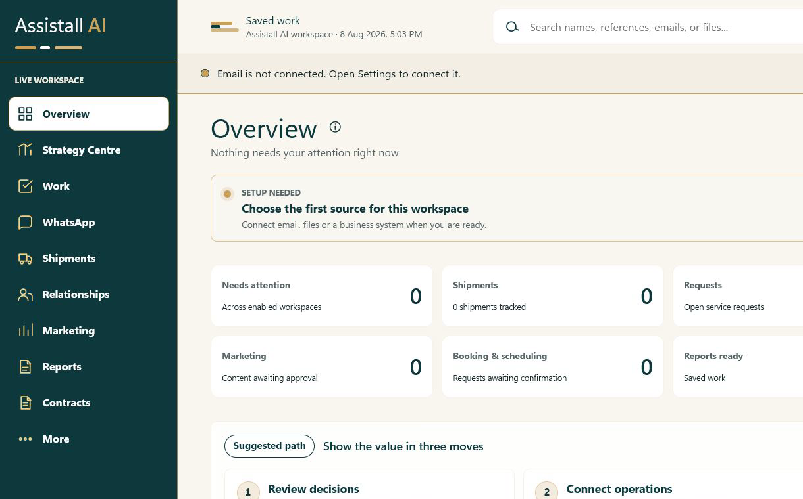

Microsoft 365 and Outlook
Setup-dependent
AI support for everyday business work
Assistall brings your email, files, reports, contracts, shipments and business systems into one clear workspace. It prepares the next step. Your team checks it.
Your data stays under your control. Nothing is sent without your approval.
One clear flow
Email, files, contracts and business systems.
Important changes and requests come forward.
Replies, reports and review work get ready.
People approve what moves forward.

What Assistall can do
Connections
Every connector says how it works: live connection, imported source or setup-dependent.
Setup-dependent
Setup-dependent
Imported source
Setup-dependent
Setup-dependent
Imported source
Imported source
Imported source
Prepared outputsExcel · Word · PDF · PowerPoint reports
Real product
Follow real business work from the source to a clear next step your team can check.
Living work queue
Northstar Supplies Framework Agreement is marked for review with the counterparty, owner and renewal date together.
Assistall gives the person checking it one clear place to open the record and decide the next step.
Living work queue
NSC-4427 brings the route, ETA, container and customs status into one reviewable record.
Your team sees what changed before they contact a client, carrier or vendor.
Living work queue
Daily Sales Report is read into a clear summary, with its source and export step kept together.
Your team reviews the prepared report before sharing it or using it to decide what happens next.
Why it matters
Spend less time searching, copying and chasing updates. Spend more time with clients, building trust, finding sales and growing the business.
Before Search, copy and chase updates
With Assistall Review work that is ready
Illustrative workday — not a performance claim.
Control and trust
Assistall works inside clear permission boundaries. Your team reviews important work before anything is sent or changed.
Choose what Assistall can access. Keep company work inside the boundaries you set.
Optional local AI and on-device speech can keep selected work on your own device.
Assistall prepares the next step. Your team checks it before anything important happens.
Tell us what slows your team down. We will show you how Assistall can help.